やることは 「動画を読む → ものさしを測る → ボールに点を打つ → 画像を保存する」 だけです。 まちがえても、たいていの操作はやり直せます。
できあがるのは、この1枚の画像です。これを提出します。
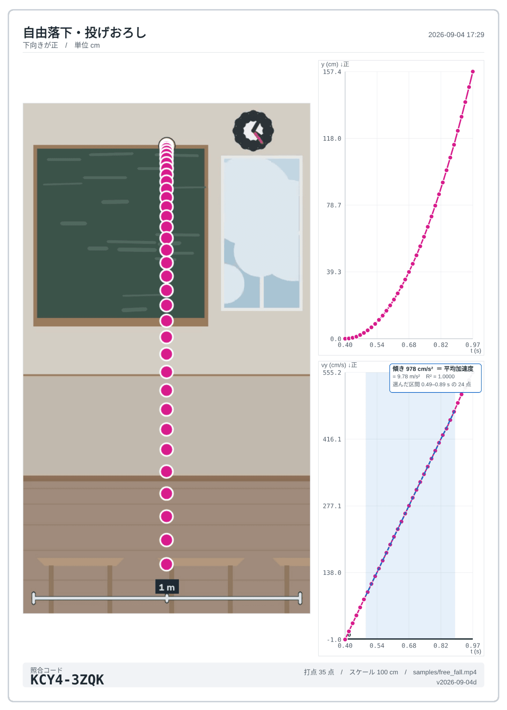
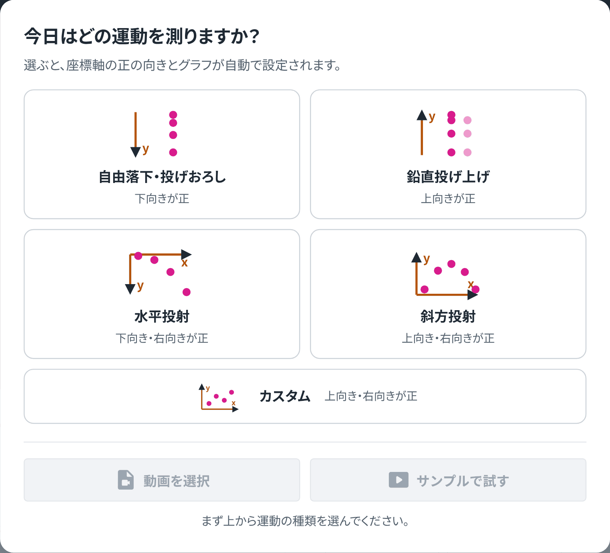
自由落下・投げおろし をタップします。
ここでえらぶと、どちら向きを正にするかと最初に出すグラフが決まります。 自由落下は下向きが正です。
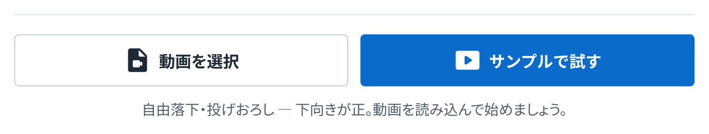
自分でとった動画は 動画を選択、 練習は サンプルで試す をタップします。
動画はとった iPad の Safari で開くのが確実です。
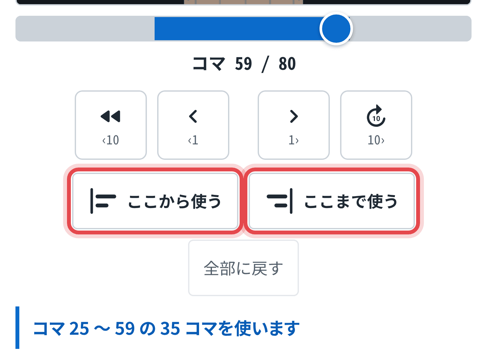
ボールが動き出すコマで ここから使う、 動き終わるコマで ここまで使う をタップします。
コマはスライダでだいたい、 ‹10 ‹1 1› 10› できっちり合わせます。
できたら はじめる。
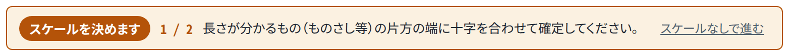
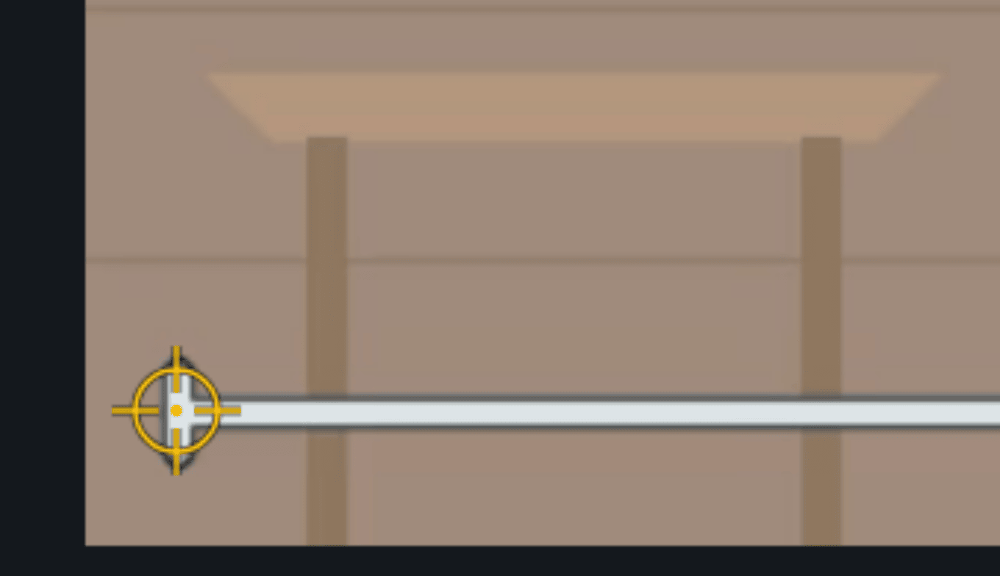
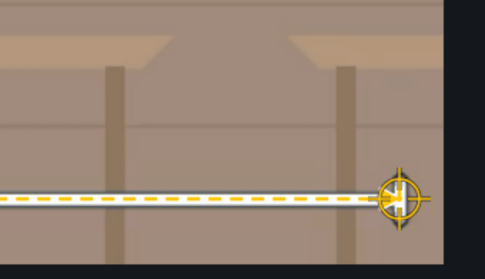
映像を指で動かして、ものさしのはしに画面中央の十字を合わせ、 スケール始点を確定 をタップします。
もう一方のはしでも同じようにタップし、その長さ（cm）を入力します。
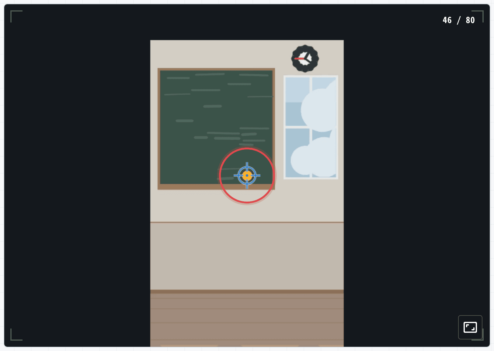
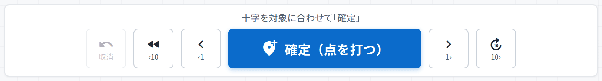
映像を動かしてボールの中心に十字を合わせ、 確定（点を打つ） をタップします。
打つと次のコマへ自動で進みます。最後までくり返します。
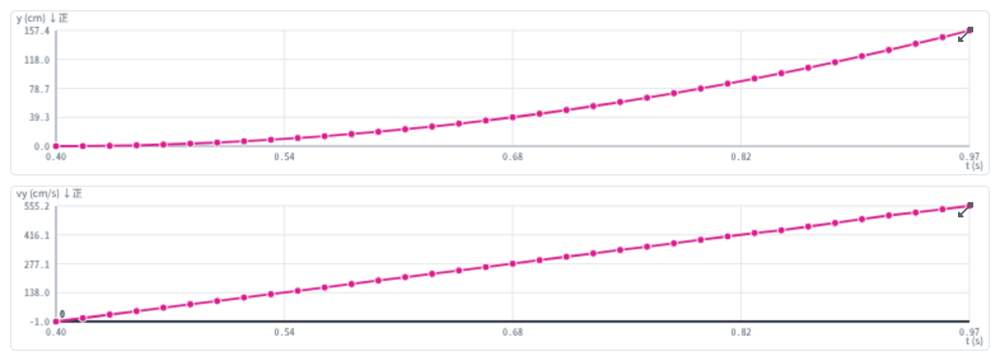
右側にグラフが出ます。うまく測れていれば y–t はカーブ、vy–t はまっすぐな線になります。
グラフをタップすると大きく表示できます。
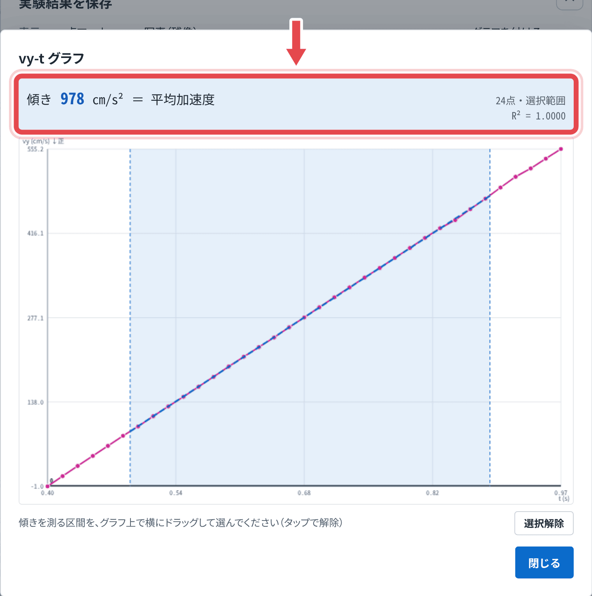
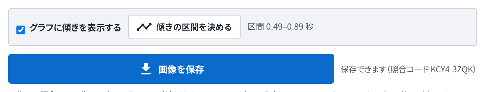
実験結果を保存 をタップします。
傾きの区間を決める を押し、グラフの上を横にドラッグして、 まっすぐな部分をえらびます。ここの傾きが重力加速度です。
画像を共有・保存 で写真に保存し、提出します。
| こまったこと | どうする |
|---|---|
| 動画が開かない | その動画をとった iPad の Safari で開く。ほかの端末に送ると開けないことがあります。 |
| 前の人の点が残っている | 最初のパネルで種類をえらび直せば消えます。自分の続きなら、同じ動画をえらび直すと数秒だけ「戻す」が出ます。 |
| コマが動かない | 使う範囲の外に出ようとしています。範囲を広げるか、そのまま進めてください。 |
| 画像が保存できない | 画面に出ている完成画像を長押しして「写真に追加」でも保存できます。 |
| グラフがガタガタ | スケールを決めたか、コマを飛ばさずに打ったかを確認。暗い場所でとるとボールがぶれます。 |